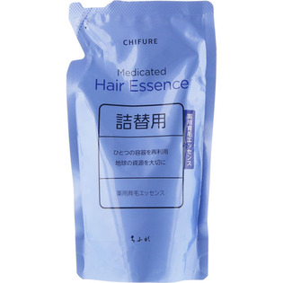

返回列表
产品名称：ちふれ 薬用育毛エッセンス詰替用 200mｌ

ちふれ化粧品 ちふれ 薬用育毛エッセンス詰替用 200mｌ 薬用育毛エッセンス詰替
メーカー ちふれ化粧品
JANコード 4974972237619
商品の特徴
抜け毛・薄毛を防いでハリのあるしなやかな髪に。
- 成分・分量
- 肌あれ防止成分 β?グリチルレチン酸 0.05%
血行促進成分 センブリエキス 0.04% 酢酸トコフェロール 0.05%
殺菌成分 シメン?5?オール 0.10%
血行促進成分 D?パントテニルアルコール 0.30%
清涼成分 政府所定変性アルコール 60.00% 無水エタノール 2.32% エタノール 0.35% メントール 0.10%
保湿成分 BG 0.74% ニンジンエキス 0.01% 酵母エキス(3) 0.01% ローヤルゼリーエキス 0.01% 冬虫夏草エキス 適量
可溶化剤 ポリオキシエチレン硬化ヒマシ油 0.50%
基剤 精製水
- 用法及び用量
適量を直接頭皮につけ、よくなじませます。
頭皮を頭頂部に向かって押し上げるように指の腹でマッサージし、頭皮全体を軽くたたきます。
シャンプー後はタオルでよく水気をふきとってからお使いください。